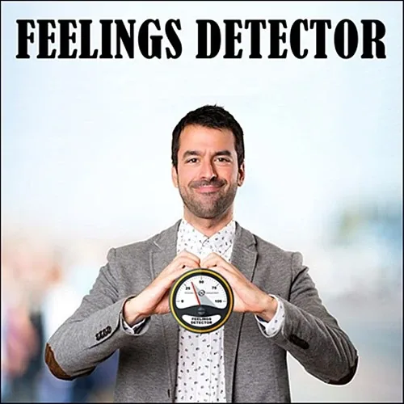

FEELINGS
DETECTOR
FEELINGS
DETECTOR

- Your Feelings Detector- It is not a design error of the human body that you have feelings and a 'Feelings Detector'. - Use it or lose it. - Well... you can't ever lose your Feelings Detector. It is built-in to the human body. - But it can get awfully rusty and full of dust and bugs from disuse. - ### ONE OF YOUR 13 TOOLS ON YOUR POSSIBILITATOR TOOLBELT- You were born wearing an energetic toolbelt with at least - 13 Possibilitator Toolson it.- Do you know what the 13 Tools are? - Can you name them right now? - Are you skilled with using them? - Are you using these tools every day to create or transform or heal things for yourself and your Team? - ### HOW TO USE IT ON YOURSELF- ### HOW TO USE IT ON OTHERS - Anne-Chloé Destremau, Possibility Management- Trainer, Helps You Calibrate Your 'Feelings Detector' - Feelings Detector Experiments- It is- yourFeelings Detector.- Nobody can read it or calibrate it for you.- On the other hand, nobody can stop you from calibrating and reading it in your daily life.- Using your Feelings Detector makes you an- Experimenter.- It also makes for an amazing life... - BECOME A FULL TIME FEELINGS DETECTOR EXPERIMENTER- Matrix Code - FEELINGS.00- Since before you were born you have had a built-in Feelings Detector.
- BECOME A FULL TIME FEELINGS DETECTOR EXPERIMENTER- Matrix Code - FEELINGS.00- Since before you were born you have had a built-in Feelings Detector.  - ### Title Text- Matrix Code - FEELINGS.00 - ### Title Text- Matrix Code - FEELINGS.00 - ### Title Text- Matrix Code - FEELINGS.00 - ### Title Text- Matrix Code - FEELINGS.00 - ### Title Text- Matrix Code - FEELINGS.00 - ### Title Text- Matrix Code - FEELINGS.00
- NOTE:This website is a- Bubble in the Bubble Map- StartOver.xyz- doorway- experiments- upgrade your thoughtware- point of origin- create- possibility- knowledge- about. Your- thoughtware- with. When you- change your thoughtware- liquid state- reorganizes- feelings- emotions- upgrading your thoughtware- build matrix- consciousness (archived — not captured)- low drama- reactivity- collectively build- responsibly- FEELINGS.00to log your Matrix Point for reading this website on- StartOver.xyz
- ### Title Text- Matrix Code - FEELINGS.00 - ### Title Text- Matrix Code - FEELINGS.00 - ### Title Text- Matrix Code - FEELINGS.00 - ### Title Text- Matrix Code - FEELINGS.00 - ### Title Text- Matrix Code - FEELINGS.00 - ### Title Text- Matrix Code - FEELINGS.00
- NOTE:This website is a- Bubble in the Bubble Map- StartOver.xyz- doorway- experiments- upgrade your thoughtware- point of origin- create- possibility- knowledge- about. Your- thoughtware- with. When you- change your thoughtware- liquid state- reorganizes- feelings- emotions- upgrading your thoughtware- build matrix- consciousness (archived — not captured)- low drama- reactivity- collectively build- responsibly- FEELINGS.00to log your Matrix Point for reading this website on- StartOver.xyz